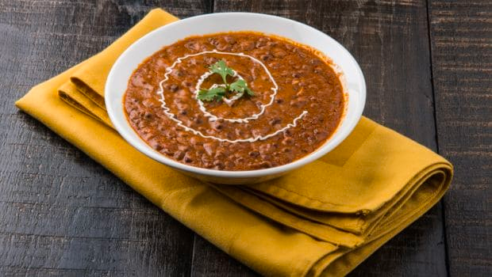
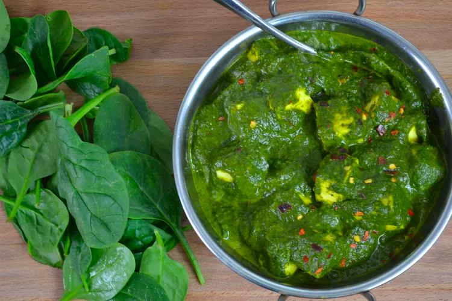

(1/2 inch) piece fresh ginger root, peeled and chopped
3 tablespoons vegetable oil
2 bay leaves, crumbled
1 large onion, minced
1 teaspoon ground coriander
1 teaspoon garam masala
1 teaspoon ground cumin
1 teaspoon ground turmeric
1 teaspoon chili powder
3 skinless, boneless chicken breast halves - diced
¼ cup tomato sauce
1 cup chicken broth
½ cup heavy cream
½ cup plain yogurt
1 teaspoon cornstarch, mixed with equal parts water
Directions
Step 1- Place cashews in a small bowl, and pour the boiling water over nuts. Set aside for 15 to 20 minutes.
Step 2- Place garlic and ginger in food processor and blend until smooth; set aside.
Step 3- Heat oil in wok over medium heat. Cook the bay leaves in hot oil for 30 seconds. Stir in onion, and cook until soft, about 3 to 5 minutes.
Step 4- Mix in garlic/ginger paste, and season with coriander, garam masala, cumin, turmeric, and chili powder.
Step 5- Stir in chicken, and cook for about 5 minutes. Pour in tomato sauce and chicken broth. Cover, reduce heat, and simmer for 15 minutes, stirring occasionally.
Step 6- Meanwhile, place the cashews, along with the water in which they were soaked, and the cream and yogurt into food processor. Process until smooth.
Step 7- Stir the cashew mixture into the chicken and onions. Simmer for 15 minutes, stirring occasionally.
Step 8- Stir in the cornstarch mixture, and continue cooking for 1 to 2 minutes.
2. Dal Makhani

Ingredients
1 cup lentils
¼ cup dry kidney beans (Optional)
Water to cover
5 cups water
Salt to taste
2 tablespoons vegetable oil
1 tablespoon cumin seeds
4 cardamom pods
1 cinnamon stick, broken
4 bay leaves
6 whole cloves
1 ½ tablespoons ginger paste
1 ½ tablespoons garlic paste
½ teaspoon ground turmeric
1 pinch cayenne pepper, or more to taste
1 cup canned tomato puree, or more to taste
1 tablespoon chili powder
2 tablespoons ground coriander
¼ cup butter
2 tablespoons dried fenugreek leaves (Optional)
½ cup cream (Optional)
Directions
Step 1-Place lentils and kidney beans in a large bowl; cover with plenty of water. Soak for at least 2 hours or overnight. Drain.
Step 2-Cook lentils, kidney beans, 5 cups water, and salt in a pot over medium heat until tender, stirring occasionally, about 1 hour. Remove from heat and set aside. Keep the lentils, kidney beans, and any excess cooking water in the pot.
Step 3-Heat vegetable oil in a saucepan over medium-high heat. Cook cumin seeds in the hot oil until they begin to pop, 1 to 2 minutes. Add cardamom pods, cinnamon stick, bay leaves, and cloves; cook until bay leaves turn brown, about 1 minute. Reduce heat to medium-low; add ginger paste, garlic paste, turmeric, and cayenne pepper. Stir to coat.
Step 4-Stir tomato puree into spice mixture; cook over medium heat until slightly reduced, about 5 minutes. Add chili powder, coriander, and butter; cook and stir until butter is melted.
Step 5-Stir lentils, kidney beans and any leftover cooking water into tomato mixture; bring to a boil, reduce heat to low. Stir fenugreek into lentil mixture. Cover saucepan and simmer until heated through, stirring occasionally, about 45 minutes. Add cream and cook until heated through, 2 to 4 minutes.
3. Palak Paneer

Ingredients
5 cups fresh spinach
4 tablespoons canola oil, divided
1 teaspoon cumin seeds
1 onion, chopped
1 green chile pepper, chopped
3 cloves garlic, minced
1 (1/2 inch) piece ginger, minced
2 tomatoes, diced
½ cup water, or as needed
1 teaspoon coriander powder
1 teaspoon cumin powder
½ teaspoon red chile powder
¼ teaspoon turmeric powder
salt to taste
8 ounces paneer, cubed
½ teaspoon garam masala
4 teaspoons heavy cream
1 pinch red chile flakes
Directions
Step 1-Bring a saucepan of water to a boil. Add spinach and cook for 1 minute. Transfer to a bowl of ice water to keep spinach bright green.
Step 2-Heat 2 tablespoons oil in a skillet over medium heat. Add cumin seeds to hot oil so they sizzle. Add onion, chile, garlic, and ginger. Cook until onion is golden brown, 3 to 5 minutes.
Step 3-Add tomatoes and cook until soft, about 2 minutes more. Remove from heat and allow mixture to cool.
Step 4-Transfer tomato mixture to a blender; add blanched spinach. Blend to a thick, smooth paste; thin with a few teaspoons water if needed.
Step 5-Heat remaining oil in the skillet over medium heat. Add coriander, cumin, chile powder, and turmeric. Fry until fragrant, about 1 minute.
Step 6-Add spinach paste and cook over medium-high heat for 2 minutes. Add water and cook for 5 minutes more. Season gravy with salt.
Step 7-Add paneer to the gravy and mix well to coat. Cook 5 minutes more. Add garam masala and cream. Stir and cook over low heat for 2 minutes. Garnish with chile flakes.